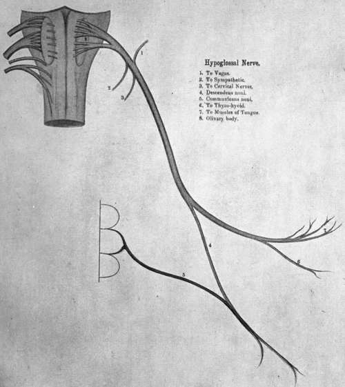

Anterior Primary Divisions Of Spinal Nerves
Description
This section is from the book "Nerves Of The Human Body", by Charles R. Whittaker. Also available from Amazon: Hughes Nerves Of The Human Body.
Anterior Primary Divisions Of Spinal Nerves
The anterior primary divisions are generally much larger than the posterior divisions. Each is connected, near its origin, by one or two filaments, with a ganglion of the sympathetic. With the exception of the lower eleven thoracic nerves, the anterior primary divisions form plexuses.
Cervical Plexus
The cervical plexus is formed by the anterior primary divisions (rami) of the first four cervical nerves. It is situated opposite the upper four cervical vertebrae under cover of the sterno-mastoid. The first cervical appears between the rectus capitis lateralis, and the rectus capitis anticus minor (rectus capitis anterior). The second, third, and fourth pass behind the vertebral artery, then forwards between the adjacent intertransverse muscles, and make their appearance between the rectus capitis anticus major (longus capitis) in front, and the scalenus medius behind. The first cervical joins the second cervical nerve. The second, third, and fourth cervicals divide into ascending and descending branches. These unite to form a series of loops which constitute the plexus.
Branches
The branches of the plexus may be classified into three sets, namely, cutaneous, muscular, and communicating. Their distribution is shown in the table.
Table Of Branches
SUPERFICIAL OR CUTANEOUS | Ascending | Great auricular. Small occipital. Superficial cervical. | (C 2, 3). | ||
Transverse | |||||
Descending | Sternal. Clavicular. Acromial. | (C. 3, 4). | |||
DEEP | Muscular | Prevertebral muscles (C. 1, 2, 3, 4). Sterno-mastoid (C. 2). Trapezius, levator scapulae, scalenus medius, scalenus posterior, and diaphragm (C. 3, 4), | |||
Communicating | To vagus To hypoglossal. | (C. 1, 2.) | |||
To spinal accessory (C. 2, 3, 4). Communicans hypoglossi (C. 2, 3). Superior cervical ganglion of sympathetic (C. 1, 2, 3, 4). | |||||
The six cutaneous branches of the cervical plexus emerge from beneath the posterior border of the sterno-mastoid, about its middle.
(a) The small occipital passes upwards along the posterior border of the sterno-mastoid to pierce the deep fascia near the apex of the posterior triangle of the neck. Its branches are :-
(1) Cervical.
(2) Auricular.
(3) Mastoid.
(4) Occipital.
It communicates with the great occipital, great auricular, and posterior auricular nerves.
(b) The superficial cervical (cutaneous colli) crosses the sternomastoid transversely beneath the platysma and the external jugular vein. On reaching the anterior triangle it splits into superior and inferior branches, the former of which communicate with the inframandibular branch of the facial.
(c) The great auricular, is the largest cutaneous branch of the cervical plexus. It winds round the posterior border of the sterno-mastoid to pass over it obliquely towards the pinna of the ear. The branches are :-
(1) Mastoid.
(2) Auricular.
(3) Facial.
It communicates with the posterior auricular and the small occipital.
(d) The names of the descending branches indicate their distribution. The sternal branch sends filaments to the sterno-clavicular joint.
Of the deep branches, special attention must be directed to the communicans hypoglossi and to the phrenic.
Communicans Hypoglossi
Formed by two twigs from the second and third cervicals, it passes in front of the carotid sheath to join the descendens hypoglossi from the hypoglossal. The resulting nerve, the ansa hypoglossi, supplies the omo-hyoid, sterno-hyoid, and sterno-thyreoid.
Phrenic
This is derived from the third, fourth, and fifth cervicals, but arises mainly from the fourth cervical nerve. The Hypoglossal Nerve phrenic frequently receives a twig from the nerve to the subclavius (see brachial plexus)
Plate VI
From its origin it descends upon the scalenus anterior, crosses the second part of the subclavian artery (the first part on the left side), and the internal mammary artery, to enter the thorax. In the neck the phrenic lies behind the omo-hyoid, transverse cervical and suprascapular (transverse scapular) vessels, the subclavian vein, and on the left side, the thoracic duct.
In its thoracic course the nerve runs almost vertically over the root of the lung, and between the pericardium and the mediastinal pleura. Just before reaching the diaphragm, the phrenic divides into several branches, which pierce the muscle separately to ramify on its lower surface. The right phrenic is shorter and more vertical than the left one; it forms a lateral relation of the right innominate vein and superior vena cava. The left phrenic crosses in front of the left vagus and the aortic arch.
The phrenic supplies the diaphragm, pericardium, and pleura. The right nerve communicates with a small sympathetic ganglion on the abdominal aspect of the diaphragm.
Continue to:
- prev: Spinal Nerves
- Table of Contents
- next: Brachial Plexus